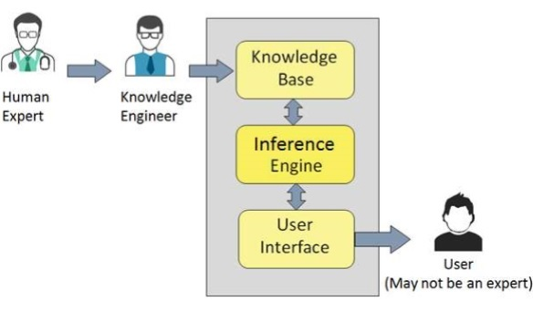
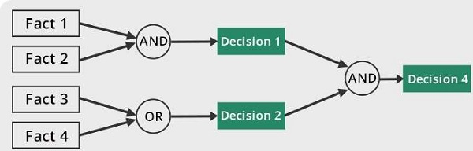
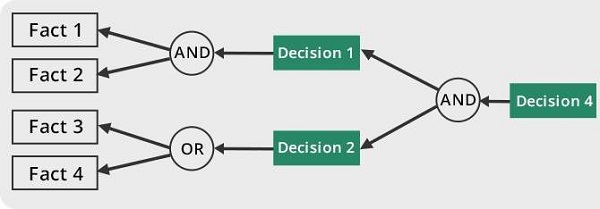

Expert Systems¶
Expert systems (ES) are one of the prominent research domains of AI. It is introduced by the researchers at Stanford University, Computer Science Department.
The expert systems are the computer applications developed to solve complex problems in a particular domain, at the level of extra-ordinary human intelligence and expertise.
Capabilities of Expert Systems¶
The expert systems are capable of:
- Advising
- Instructing and assisting human in decision making
- Demonstrating
- Deriving a solution
- Diagnosing
- Explaining
- Interpreting input
- Predicting results
- Justifying the conclusion
- Suggesting alternative options to a problem
They are incapable of :
- Substituting human decision makers
- Possessing human capabilities
- Producing accurate output for inadequate knowledge base
- Refining their own knowledge
Components of Expert Systems¶

Knowledge Base¶
It contains domain-specific and high-quality knowledge.
Knowledge is required to exhibit intelligence. The success of any ES majorly depends upon the collection of highly accurate and precise knowledge.
What is Knowledge?¶
The data is collection of facts. The information is organized as data and facts about the task domain. Data, Information, and past experience combined together are termed as knowledge.
Components of Knowledge Base¶
The knowledge base of an ES is a store of both, factual and heuristic knowledge.
- Factual Knowledge: It is the information widely accepted by the Knowledge Engineers and scholars in the task domain.
- Heuristic Knowledge: It is about practice, accurate judgement, one’s ability of evaluation, and guessing.
Knowledge representation¶
It is the method used to organize and formalize the knowledge in the knowledge base. It is in the form of IF-THEN-ELSE rules.
Knowledge Acquisition¶
The success of any expert system majorly depends on the quality, completeness, and accuracy of the information stored in the knowledge base.
The knowledge base is formed by readings from various experts, scholars, and the Knowledge Engineers. The knowledge engineer is a person with the qualities of empathy, quick learning, and case analyzing skills.
He acquires information from subject expert by recording, interviewing, and observing him at work, etc. He then categorizes and organizes the information in a meaningful way, in the form of IF-THEN-ELSE rules, to be used by interference machine. The knowledge engineer also monitors the development of the ES.
Inference Engine¶
Use of efficient procedures and rules by the Inference Engine is essential in deducting a correct, flawless solution.
In case of knowledge-based ES, the Inference Engine acquires and manipulates the knowledge from the knowledge base to arrive at a particular solution.
In case of rule based ES, it:
- Applies rules repeatedly to the facts, which are obtained from earlier rule application.
- Adds new knowledge into the knowledge base if required.
- Resolves rules conflict when multiple rules are applicable to a particular case.
To recommend a solution, the Inference Engine uses the following strategies: Forward Chaining or Backward Chaining
Forward Chaining¶
It is a strategy of an expert system to answer the question, “What can happen next?”
Here, the Inference Engine follows the chain of conditions and derivations and finally deduces the outcome. It considers all the facts and rules, and sorts them before concluding to a solution.
This strategy is followed for working on conclusion, result, or effect. For example, prediction of share market status as an effect of changes in interest rates. 
Backward Chaining¶
With this strategy, an expert system finds out the answer to the question, “Why this happened?”
On the basis of what has already happened, the Inference Engine tries to find out which conditions could have happened in the past for this result. This strategy is followed for finding out cause or reason. For example, diagnosis of blood cancer in humans. 
User Interface¶
User interface provides interaction between user of the ES and the ES itself. It is generally Natural Language Processing so as to be used by the user who is well-versed in the task domain. The user of the ES need not be necessarily an expert in Artificial Intelligence.
It explains how the ES has arrived at a particular recommendation. The explanation may appear in the following forms:
- Natural language displayed on screen.
- Verbal narrations in natural language.
- Listing of rule numbers displayed on the screen.
The user interface makes it easy to trace the credibility of the deductions.